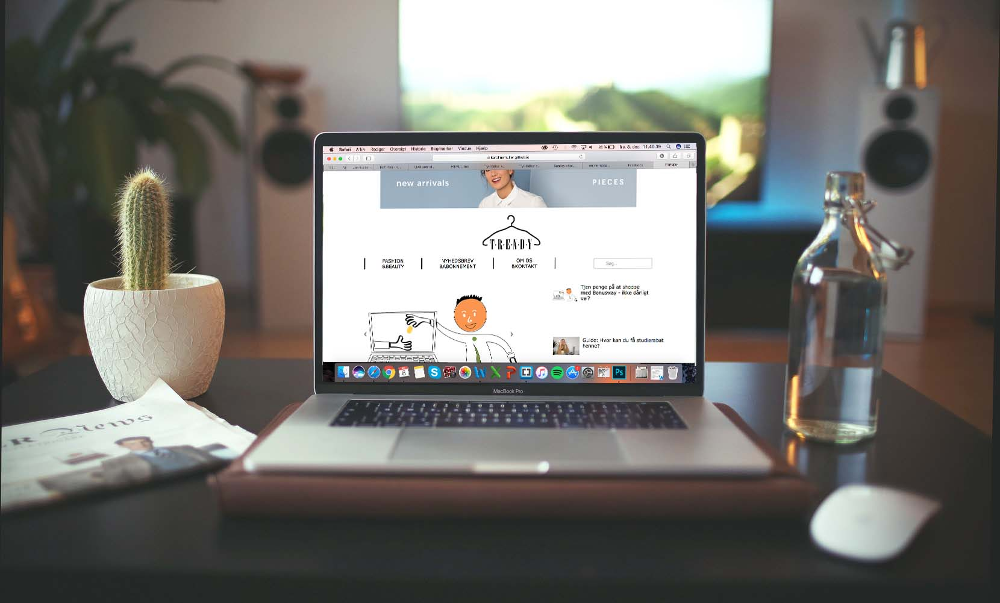

PROJEKT 1.2
Gruppemedlemmer: Individuel opgave
Kunde: Mine medstuderende
Dato: 25. september - 13. oktober 2017
Hjemmesiden: https://karolinemuller.github.io
Projekt 1.2 er et projekt, hvor vi individuelt skal lave et online magasin. Der skal skrives tre artikler, og oven i det laves vores eget magasin, som hjemmeside og hvori de 3 artikler skal indgå i. Det vil altså sige, at man er sin egen content creator. Til dette projekt var målgruppen givet, idet det er et online magasin til ens medstuderende. Med udgangspunkt i det har jeg så valgt tema’et mode. Det er ikke bare mode, men studerende og mode, fordi med et budget på SU, så bliver det svært også at købe noget tøj og måske endda mærkevarer tøj, så dette er min målgruppe studerende der går op i mode.

Den første uge startede med at hovedet blev lagt i blød, og tænkte på hvad ens medstuderende godt kunne tænke sig at læse om. Jeg fandt syv forskellige artikler, og lavede en afstemning, om hvilke de kunne tænke sig at læse. Min første artikel, handler om bonusway. Det er en online tjeneste, hvor du faktisk kan tjene penge på at købe tøj, det er jo noget for studerende på et SU-budget, der har interesse for mode. Illustrationen har jeg selv tegnet i illustrator, og det skal bruges til min første artikel til mit online magasin omkring at tjene penge på at shoppe tøj via Bonusway. Mit logo til mit online magasin, er også blevet udarbejdet i illustrator, først blev der tegnet en masse skitser til et logo, som skulle passe til tema’et for mit online magasin, og derefter blev det enelige tegnet over i illustrator. Billeder til vores case 2 opgave, skulle tages af os selv, så det er også en af de ting, jeg har fordybet mig i udenfor pensum, så familien har lige skulle stå model, så jeg har kunne få taget nogle billeder, til artiklerne til mit online magasin.

Den anden uge, stod den på kodning og synopse skrivning. Jeg har lært meget på bare denne her uge, det er helt vildt. At sidde og kode helt selv, har bare gjort, at jeg selv skulle finde ud af, hvordan jeg fik en tekst mere til venstre og mange andre ting. Selvfølgelig bliver jeg aldrig tilfreds, med det jeg har afleveret, fordi hvor kunne jeg godt have brugt mere tid. Det som vi lærte i sidste uge, det med at lave en responsiv hjemmeside, wow det har været sværere at lave, end jeg gik og troede, så derfor er det en af de ting, jeg ikke fik lavet på min hjemmeside denne her gang. Der kunne jeg godt have brugt, at der havde været mere undervisning inden case 2 begyndte, fordi så havde jeg nok fået lavet en responsiv hjemmeside.
Alt i alt så har det været en god proces at komme igennem, at man havde en tidsplan at skulle overholde. Men også at man har skulle sidde selv med opgaven, og især det at kode helt selv, det har været rigtig godt, fordi så er det ikke de andre i gruppen, der sidder og koder, men en selv der skal gøre det hele. Selvfølgelig har det været dejligt at kunne sidde med det helt selv, og bestemmer helt selv, hvad der skulle være på ens side, men hvor kunne jeg godt på nogle punkter have brugt et gruppemedlem eller to. Fordi jeg fandt ud af, at det er svært selv at sidde og beslutte om, det man har siddet og lavet, er noget værre noget eller om det faktisk er helt okay. Så måske til næste gang, kunne det være rart at mødes nogle stykker hjemme hos en, og sidde og hjælpe hinanden og høre hinanden om, det her er okay osv.